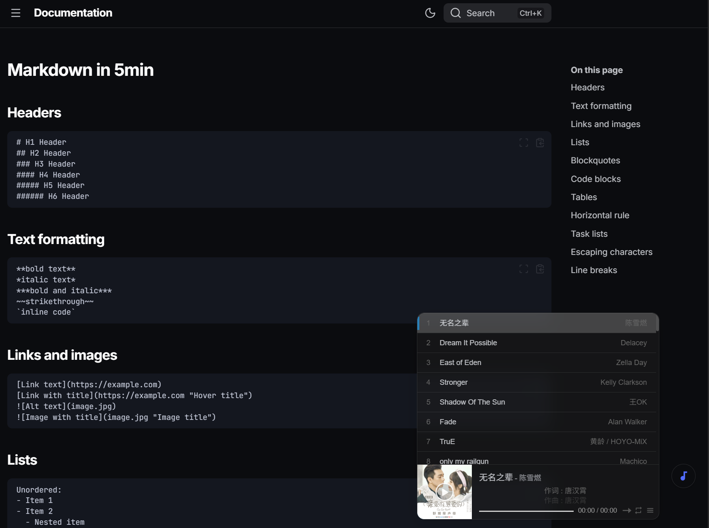
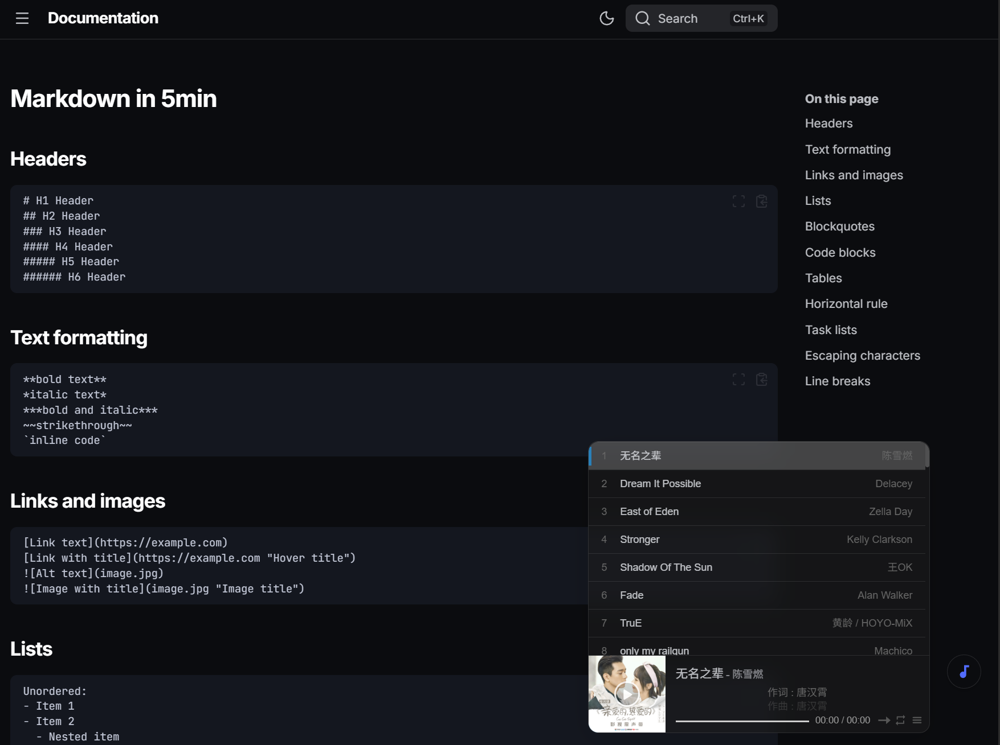

为 Zensical 站点添加音乐播放器功能¶
本文讲述如何通过集成 APlayer 和 MetingJS，在 Zensical 站点中添加一个美观且功能强大的全局悬浮音乐播放器。
APlayer 是一款简洁漂亮的 HTML5 音乐播放器，而 MetingJS 则是一个强大的 APlayer 插件，它通过 Meting API 支持从各大主流音乐平台（网易云音乐、QQ音乐、酷狗音乐、酷我音乐等）自动解析歌单、专辑或单曲链接。
这意味着你无需手动上传音频文件，只需提供一个歌单 ID，即可在站点上播放你喜爱的音乐集合。
单独部署音乐播放器功能¶
第一步：创建播放器脚本¶
创建 docs/javascripts/music_player.js 文件，用于动态插入播放器 DOM 元素和控制显隐逻辑：
const MUSIC_ICON = `<svg viewBox="0 0 24 24"><path d="M12,3V12.26C11.5,12.09 11,12 10.5,12C8,12 6,14 6,16.5C6,19 8,21 10.5,21C13,21 15,19 15,16.5V6H19V3H12Z" /></svg>`;
document.addEventListener("DOMContentLoaded", function () {
// Only initialize if the toggle button doesn't exist yet
if (document.getElementById("music-player-toggle")) return;
createMusicUI();
});
function createMusicUI() {
// Create Toggle Button
const toggleBtn = document.createElement("button");
toggleBtn.id = "music-player-toggle";
toggleBtn.title = "Music Player";
toggleBtn.innerHTML = MUSIC_ICON;
document.body.appendChild(toggleBtn);
// Create Player Container
const playerContainer = document.createElement("div");
playerContainer.id = "music-player-container";
// Create MetingJS Element
// Defaulting to a chill playlist. User can change ID here.
const metingElement = document.createElement("meting-js");
metingElement.setAttribute("server", "netease");
metingElement.setAttribute("type", "playlist");
metingElement.setAttribute("id", "17741904561"); // 笔者的网易云 Playlist ID
metingElement.setAttribute("fixed", "false");
metingElement.setAttribute("mini", "false");
metingElement.setAttribute("autoplay", "false");
metingElement.setAttribute("list-folded", "true");
metingElement.setAttribute("theme", "#2980b9");
metingElement.setAttribute("volume", "0.7");
metingElement.setAttribute("preload", "none");
playerContainer.appendChild(metingElement);
document.body.appendChild(playerContainer);
// Toggle Logic
toggleBtn.addEventListener("click", () => {
playerContainer.classList.toggle("show");
toggleBtn.classList.toggle("active");
});
}
第二步：添加播放器样式¶
创建 docs/stylesheets/music_player.css 文件，定义播放器和悬浮按钮的样式，并适配深色模式：
/* Music Player Toggle Button */
#music-player-toggle {
position: fixed;
bottom: 72px; /* Base position, 52px above Ask AI (20px + 40px + 12px gap) */
/*此bottom可以按需设置，设置为72px时，音乐控制按钮与音乐播放器顶部齐平；且为 ASK AI 功能按键预留了位置*/
/*如果有按下文教程所言配置了按钮与播放器避让页脚脚本，此处配置无效，实际按钮高度取决于 js 脚本*/
right: 20px;
width: 40px;
height: 40px;
border-radius: 50%;
/* Native Material Theme Styling */
background-color: var(--md-default-bg-color);
border: 1px solid var(--md-default-fg-color--lightest);
color: var(--md-default-fg-color);
box-shadow: 0 2px 5px rgba(0,0,0,0.2);
display: flex;
align-items: center;
justify-content: center;
cursor: pointer;
z-index: 101;
transition: all 0.3s;
opacity: 0.6;
}
#music-player-toggle:hover {
opacity: 1;
box-shadow: 0 4px 8px rgba(0,0,0,0.3);
transform: scale(1.05);
}
#music-player-toggle svg {
width: 20px;
height: 20px;
fill: currentColor;
}
#music-player-toggle.active {
background-color: var(--md-default-bg-color);
color: var(--md-accent-fg-color, #0052cc);
opacity: 1;
}
/* Music Player Container */
#music-player-container {
position: fixed;
bottom: 20px;
right: 80px; /* To the left of the buttons (20px right + 40px btn + 20px gap) */
z-index: 100;
transition: opacity 0.3s ease, transform 0.3s ease, bottom 0.3s ease;
opacity: 0;
pointer-events: none;
transform: translateX(20px);
/* Default APlayer width */
width: 400px;
max-width: calc(100vw - 100px);
}
#music-player-container.show {
opacity: 1;
pointer-events: auto;
transform: translateX(0);
}
/* Glassmorphism & Rounded Corners for APlayer */
#music-player-container .aplayer {
margin: 0 !important;
border-radius: 12px !important;
background: rgba(255, 255, 255, 0.55) !important; /* Light mode glass */
backdrop-filter: blur(12px);
-webkit-backdrop-filter: blur(12px);
box-shadow: 0 8px 32px rgba(0, 0, 0, 0.1) !important;
border: 1px solid rgba(255, 255, 255, 0.3);
/* Expand upwards logic: Use flex column-reverse */
display: flex;
flex-direction: column-reverse;
}
/* Playlist Styling for Upward Expansion */
#music-player-container .aplayer .aplayer-list {
border-radius: 12px 12px 0 0;
margin-bottom: 0;
border-bottom: none;
max-height: 320px; /* Removed !important to allow toggling */
overflow-y: auto;
}
/* Only show border when playlist is expanded */
#music-player-container .aplayer .aplayer-list:not(.aplayer-list-hide) {
border-bottom: 1px solid rgba(0, 0, 0, 0.05);
}
#music-player-container .aplayer .aplayer-body {
border-radius: 0 0 12px 12px;
}
/* Hide APlayer's fixed mode container if it somehow gets triggered */
.aplayer-fixed {
display: none !important;
}
/* Remove borders from info area */
#music-player-container .aplayer .aplayer-info {
border-bottom: none !important;
}
/* Dark Mode Support */
[data-md-color-scheme="slate"] #music-player-container .aplayer {
background: rgba(30, 30, 30, 0.55) !important; /* Dark mode glass */
border-color: rgba(255, 255, 255, 0.1);
color: var(--md-default-fg-color);
}
/* Dark Mode List Fixes */
[data-md-color-scheme="slate"] #music-player-container .aplayer .aplayer-list {
border-color: rgba(255, 255, 255, 0.1);
}
/* Fix bright borders between songs in dark mode */
[data-md-color-scheme="slate"] #music-player-container .aplayer .aplayer-list ol li {
border-top: 1px solid rgba(255, 255, 255, 0.1) !important;
border-bottom: none !important;
}
/* Fix bright borders on hover in dark mode */
[data-md-color-scheme="slate"] #music-player-container .aplayer .aplayer-list ol li:hover {
background: rgba(255, 255, 255, 0.1) !important;
}
/* Fix active song background in dark mode */
[data-md-color-scheme="slate"] #music-player-container .aplayer .aplayer-list ol li.aplayer-list-light {
background: rgba(255, 255, 255, 0.2) !important;
}
/* Adjust text colors in dark mode */
[data-md-color-scheme="slate"] #music-player-container .aplayer .aplayer-info .aplayer-music .aplayer-title {
color: var(--md-default-fg-color);
}
[data-md-color-scheme="slate"] #music-player-container .aplayer .aplayer-info .aplayer-music .aplayer-author {
color: var(--md-default-fg-color--light);
}
/* Hide gradient overlay in glassmorphism (both light and dark mode) as it looks weird */
#music-player-container .aplayer .aplayer-lrc:before,
#music-player-container .aplayer .aplayer-lrc:after {
display: none !important;
}
/* Fix bright scrollbar in dark mode */
[data-md-color-scheme="slate"] #music-player-container .aplayer .aplayer-list ol::-webkit-scrollbar-thumb {
background-color: rgba(255, 255, 255, 0.25) !important;
}
[data-md-color-scheme="slate"] #music-player-container .aplayer .aplayer-list ol::-webkit-scrollbar-thumb:hover {
background-color: rgba(255, 255, 255, 0.4) !important;
}
第三步：（可选）按钮与播放器避让页脚脚本¶
创建或在 docs/javascripts/extra.js 文件中添加以下程序，实现播放器元素自动避让页脚功能：
/* 音乐控制按钮与播放器自动避让页脚 */
document.addEventListener("DOMContentLoaded", function () {
// 按钮避让页脚逻辑 (Footer Avoidance Logic)
function updateButtonPosition() {
const footer = document.querySelector(".md-footer") || document.querySelector("footer");
if (!footer) return;
const footerRect = footer.getBoundingClientRect();
const viewportHeight = window.innerHeight;
const distanceToFooter = viewportHeight - footerRect.top;
// 基础底部距离 (Base bottom offset)
const baseBottom = 20;
let offset = 0;
if (distanceToFooter > 0) {
offset = distanceToFooter;
}
// 更新音乐播放器按钮位置，此处设置bottom为72px（为 Ask AI 功能按钮预留 52px 垂直空间）
const musicToggle = document.getElementById("music-player-toggle");
if (musicToggle) {
musicToggle.style.bottom = `${baseBottom + 52 + offset}px`;
}
// 更新音乐播放器容器位置
const musicContainer = document.getElementById("music-player-container");
if (musicContainer) {
musicContainer.style.bottom = `${baseBottom + offset}px`;
}
}
window.addEventListener("scroll", updateButtonPosition);
window.addEventListener("resize", updateButtonPosition);
// 初始化检查 (延时一小段时间以确保动态元素已加载)
setTimeout(updateButtonPosition, 100);
});
第四步：引入资源 (zensical.toml)¶
在 zensical.toml 中引入 APlayer、MetingJS 的 CDN 链接以及自定义的脚本和样式：
extra_javascript = [
"https://cdnjs.cloudflare.com/ajax/libs/aplayer/1.10.1/APlayer.min.js", # Aplayer 脚本
"https://cdn.jsdelivr.net/npm/meting@2/dist/Meting.min.js", # MetingJS 脚本
"javascripts/music_player.js", # 音乐播放器脚本
"javascripts/extra.js"# （可选）按钮与播放器避让页脚脚本
]
extra_css = [
"https://cdnjs.cloudflare.com/ajax/libs/aplayer/1.10.1/APlayer.min.css", # Aplayer 样式表
"stylesheets/music_player.css", # 音乐播放器样式表
]
第五步：配置歌单¶
要修改播放的歌单，请编辑 docs/javascripts/music_player.js 文件，找到以下行并修改 id 属性：
保存后重新构建站点即可生效。
最终部署效果示例：
 

同时部署 ASK AI 与音乐播放器功能¶
如果需要同时使用 ASK AI 和音乐播放器，我们需要对代码进行一定的调整，以确保两者在界面上能够和谐共存，互不遮挡。
音乐播放器配置¶
音乐播放器的样式表 (music_player.css) 与脚本文件 (music_player.js) 与单独部署时保持一致，无需修改（具体代码请直接跳转至 第一步：创建播放器脚本 和 第二步：添加播放器样式）。
ASK AI 样式配置¶
ASK AI 的样式表 (ask_ai.css) 也与单独部署时保持一致，直接使用即可。
/* Chat Toggle Button - Style matched to #sidebar-toggle */
#ask-ai-toggle {
position: fixed;
bottom: 20px;
right: 20px;
width: 40px; /* Reduced to match sidebar toggle */
height: 40px;
border-radius: 50%;
/* Native Material Theme Styling */
background-color: var(--md-default-bg-color);
border: 1px solid var(--md-default-fg-color--lightest);
color: var(--md-default-fg-color);
box-shadow: 0 2px 5px rgba(0,0,0,0.2);
display: flex;
align-items: center;
justify-content: center;
cursor: pointer;
z-index: 101;
transition: all 0.3s;
opacity: 0.6; /* Match sidebar toggle initial state */
}
#ask-ai-toggle:hover {
opacity: 1;
box-shadow: 0 4px 8px rgba(0,0,0,0.3);
transform: scale(1.05);
}
#ask-ai-toggle svg {
width: 20px;
height: 20px;
fill: currentColor; /* Use text color */
}
/* Chat Window */
#ask-ai-window {
position: fixed;
bottom: 80px;
right: 20px;
width: 400px; /* Slightly wider */
height: 600px; /* Slightly taller */
background-color: var(--md-default-bg-color, #fff);
border: 1px solid var(--md-default-fg-color--lightest, #e0e0e0);
border-radius: 12px;
box-shadow: 0 8px 30px rgba(0,0,0,0.12); /* Softer, deeper shadow */
display: none;
flex-direction: column;
z-index: 100;
overflow: hidden;
font-family: inherit;
transition: width 0.3s ease, height 0.3s ease, top 0.3s ease, left 0.3s ease, right 0.3s ease, bottom 0.3s ease;
max-height: 80vh;
}
#ask-ai-window.expanded {
width: 800px;
max-width: calc(100vw - 52px);
height: 80vh;
}
#ask-ai-window.open {
display: flex;
}
/* Header - Clean Style */
.ask-ai-header {
padding: 10px 12px 10px 18px;
/* Remove accent background, use default */
background-color: var(--md-default-bg-color);
color: var(--md-default-fg-color);
border-bottom: 1px solid var(--md-default-fg-color--lightest);
display: flex;
align-items: center;
justify-content: space-between;
}
.ask-ai-title {
font-weight: 700;
font-size: 1.3em;
display: flex;
align-items: center;
gap: 10px;
letter-spacing: 0.5px;
}
.ask-ai-title svg {
color: var(--md-accent-fg-color); /* Keep icon colored for MKDocs recognition */
transform: translateY(-0.6px); /* 向上移动，调整对齐 */
}
.ask-ai-controls {
display: flex;
align-items: center;
gap: 4px;
}
.ask-ai-controls button svg {
width: 20px;
height: 20px;
fill: currentColor;
}
.ask-ai-close,
.ask-ai-expand {
background: none;
border: none;
color: var(--md-default-fg-color--light);
cursor: pointer;
padding: 4px;
border-radius: 50%;
transition: background-color 0.2s, color 0.2s;
display: flex;
align-items: center;
justify-content: center;
}
.ask-ai-close:hover,
.ask-ai-expand:hover {
background-color: var(--md-default-fg-color--lightest);
color: var(--md-default-fg-color);
}
/* Messages Area */
.ask-ai-messages {
flex: 1;
overflow-y: auto;
/* 防止滚动链传播到父容器 */
overscroll-behavior: contain;
-webkit-overflow-scrolling: touch;
padding: 20px;
display: flex;
flex-direction: column;
gap: 20px;
background-color: var(--md-default-bg-color, #fff);
}
/* 自定义滚动条样式 */
.ask-ai-messages::-webkit-scrollbar {
width: 6px;
}
.ask-ai-messages::-webkit-scrollbar-track {
background: transparent;
}
.ask-ai-messages::-webkit-scrollbar-thumb {
background: rgba(0, 0, 0, 0.1);
border-radius: 3px;
}
.ask-ai-messages::-webkit-scrollbar-thumb:hover {
background: rgba(0, 0, 0, 0.2);
}
.ask-ai-message {
max-width: 88%;
padding: 12px 16px;
border-radius: 16px;
line-height: 1.5;
font-size: 16px;
word-wrap: break-word;
}
.ask-ai-message.user {
align-self: flex-end;
background-color: var(--md-accent-fg-color, #0052cc);
color: white;
border-bottom-right-radius: 4px;
}
.ask-ai-message.assistant {
align-self: flex-start;
background-color: var(--md-default-fg-color--lightest, #f5f5f5);
color: var(--md-default-fg-color, #333);
border-bottom-left-radius: 4px;
}
/* Dark Mode Adjustments */
[data-md-color-scheme="slate"] .ask-ai-message.assistant {
background-color: rgba(255,255,255,0.08);
color: var(--md-default-fg-color);
}
[data-md-color-scheme="slate"] #ask-ai-window {
border-color: rgba(255,255,255,0.1);
}
/* 深色模式下的滚动条 */
[data-md-color-scheme="slate"] .ask-ai-messages::-webkit-scrollbar-thumb {
background: rgba(255, 255, 255, 0.2);
}
[data-md-color-scheme="slate"] .ask-ai-messages::-webkit-scrollbar-thumb:hover {
background: rgba(255, 255, 255, 0.3);
}
/* Input Area */
.ask-ai-input-area {
padding: 10px 12px;
border-top: 1px solid var(--md-default-fg-color--lightest, #eee);
display: flex;
gap: 10px;
background-color: var(--md-default-bg-color, #fff);
}
.ask-ai-input {
flex: 1;
border: 1px solid var(--md-default-fg-color--lightest, #ddd);
border-radius: 24px;
padding: 10px 18px;
outline: none;
background-color: transparent;
color: var(--md-default-fg-color);
font-size: 16px;
transition: border-color 0.2s, box-shadow 0.2s;
}
.ask-ai-input:focus {
border-color: var(--md-accent-fg-color, #0052cc);
box-shadow: 0 0 0 2px rgba(var(--md-accent-fg-color--rgb), 0.1);
}
.ask-ai-send {
width: 42px;
height: 42px;
border-radius: 50%;
background-color: var(--md-accent-fg-color, #0052cc);
border: none;
color: white;
cursor: pointer;
display: flex;
align-items: center;
justify-content: center;
transition: all 0.2s;
box-shadow: 0 2px 5px rgba(0,0,0,0.1);
}
.ask-ai-send:disabled {
background-color: var(--md-default-fg-color--lightest, #ccc);
cursor: not-allowed;
box-shadow: none;
opacity: 0.7;
}
.ask-ai-send:hover:not(:disabled) {
transform: scale(1.05);
box-shadow: 0 4px 8px rgba(0,0,0,0.2);
}
/* Markdown Content Styling */
.ask-ai-message.assistant p {
margin: 0 0 10px 0;
}
.ask-ai-message.assistant p:last-child {
margin: 0;
}
.ask-ai-message.assistant code {
background-color: rgba(127,127,127,0.15);
padding: 2px 6px;
border-radius: 4px;
font-size: 0.9em;
font-family: var(--md-code-font-family, monospace);
}
.ask-ai-message.assistant pre {
background-color: rgba(127,127,127,0.1);
padding: 12px;
border-radius: 8px;
overflow-x: auto;
margin: 10px 0;
}
.ask-ai-message.assistant pre > code {
background: transparent;
padding: 0;
}
.ask-ai-message.assistant ul, .ask-ai-message.assistant ol {
margin: 0 0 10px 0;
padding-left: 20px;
}
.ask-ai-message.assistant li {
margin-bottom: 4px;
}
/* Typing Indicator */
.typing-indicator {
display: flex;
gap: 5px;
padding: 6px 10px;
}
.typing-dot {
width: 8px;
height: 8px;
background-color: currentColor;
border-radius: 50%;
animation: typing 1.4s infinite ease-in-out both;
opacity: 0.6;
}
.typing-dot:nth-child(1) { animation-delay: -0.32s; }
.typing-dot:nth-child(2) { animation-delay: -0.16s; }
@keyframes typing {
0%, 80%, 100% { transform: scale(0); }
40% { transform: scale(1); }
}
/* Mobile Responsiveness */
@media (max-width: 480px) {
#ask-ai-window {
width: calc(100% - 30px); /* More margin */
height: 70vh;
bottom: 80px;
right: 15px;
}
#ask-ai-window.expanded {
width: 100% !important;
height: 100% !important;
top: 0 !important;
left: 0 !important;
right: 0 !important;
bottom: 0 !important;
border-radius: 0;
z-index: 102; /* Ensure it covers everything */
max-width: none !important;
max-height: none !important;
}
}
ASK AI 脚本逻辑调整¶
主要的变化在于 ask_ai.js 脚本。为了避免 UI 冲突，我们需要在 ask_ai.js 中添加逻辑：当 AI 聊天窗口打开时，自动隐藏音乐播放器窗口和按钮；当 AI 窗口关闭时，恢复显示音乐播放器控制按钮。
修改后的 ask_ai.js 代码如下：
// Cloudflare Worker URL - REPLACE THIS WITH YOUR DEPLOYED WORKER URL
// Example: "https://nav-hub-ai.your-username.workers.dev"
const WORKER_URL = "https://ask.009420.xyz"; //本站的 URL 请求地址，自行部署必须替换为您自己的地址
const CHAT_ICON = `<svg viewBox="0 0 24 24"><path d="M20,2H4A2,2 0 0,0 2,4V22L6,18H20A2,2 0 0,0 22,16V4A2,2 0 0,0 20,2M20,16H6L4,18V4H20" /></svg>`;
const COLLAPSE_ICON = `<svg viewBox="0 0 24 24"><path d="M7.41,8.58L12,13.17L16.59,8.58L18,10L12,16L6,10L7.41,8.58Z" /></svg>`;
const EXPAND_ICON = `<svg viewBox="0 0 24 24"><path d="M5,5H10V7H7V10H5V5M14,5H19V10H17V7H14V5M17,14H19V19H14V17H17V14M10,17V19H5V14H7V17H10Z" /></svg>`;
const COMPRESS_ICON = `<svg viewBox="0 0 24 24"><path d="M14,14H19V16H16V19H14V14M5,14H10V19H8V16H5V14M8,5H10V10H5V8H8V5M19,8V10H14V5H16V8H19Z" /></svg>`;
document.addEventListener("DOMContentLoaded", function () {
// Only initialize if the toggle button doesn't exist yet
if (document.getElementById("ask-ai-toggle")) return;
createChatUI();
initializeChatEvents();
});
function createChatUI() {
// Create Toggle Button
const toggleBtn = document.createElement("button");
toggleBtn.id = "ask-ai-toggle";
toggleBtn.title = "Ask AI";
toggleBtn.innerHTML = CHAT_ICON;
document.body.appendChild(toggleBtn);
// Create Chat Window
const chatWindow = document.createElement("div");
chatWindow.id = "ask-ai-window";
chatWindow.innerHTML = `
<div class="ask-ai-header">
<div class="ask-ai-title">
<svg viewBox="0 0 24 24" width="20" height="20" fill="currentColor">
<path d="M12,2A10,10 0 0,1 22,12A10,10 0 0,1 12,22A10,10 0 0,1 2,12A10,10 0 0,1 12,2M12,4A8,8 0 0,0 4,12A8,8 0 0,0 12,20A8,8 0 0,0 20,12A8,8 0 0,0 12,4M12,6A6,6 0 0,1 18,12A6,6 0 0,1 12,18A6,6 0 0,1 6,12A6,6 0 0,1 12,6M12,8A4,4 0 0,0 8,12A4,4 0 0,0 12,16A4,4 0 0,0 16,12A4,4 0 0,0 12,8Z" />
</svg>
Ask AI
</div>
<div class="ask-ai-controls">
<button class="ask-ai-expand" title="Expand">
${EXPAND_ICON}
</button>
<button class="ask-ai-close" title="Close">
<svg viewBox="0 0 24 24">
<path d="M19,6.41L17.59,5L12,10.59L6.41,5L5,6.41L10.59,12L5,17.59L6.41,19L12,13.41L17.59,19L19,17.59L13.41,12L19,6.41Z" />
</svg>
</button>
</div>
</div>
<div class="ask-ai-messages" id="ask-ai-messages">
<div class="ask-ai-message assistant">
<p>你好！我是本站的 AI 助手。有什么我可以帮你的吗？</p>
</div>
</div>
<div class="ask-ai-input-area">
<input type="text" class="ask-ai-input" id="ask-ai-input" placeholder="输入你的问题..." autocomplete="off">
<button class="ask-ai-send" id="ask-ai-send" disabled>
<svg viewBox="0 0 24 24" width="20" height="20" fill="currentColor">
<path d="M2,21L23,12L2,3V10L17,12L2,14V21Z" />
</svg>
</button>
</div>
`;
document.body.appendChild(chatWindow);
}
// Conversation History (Max 5 rounds = 10 messages)
let conversationHistory = [];
const MAX_HISTORY = 10;
function initializeChatEvents() {
const toggleBtn = document.getElementById("ask-ai-toggle");
const chatWindow = document.getElementById("ask-ai-window");
const closeBtn = chatWindow.querySelector(".ask-ai-close");
const expandBtn = chatWindow.querySelector(".ask-ai-expand");
const input = document.getElementById("ask-ai-input");
const sendBtn = document.getElementById("ask-ai-send");
const messagesContainer = document.getElementById("ask-ai-messages");
// Toggle Window
toggleBtn.addEventListener("click", () => {
chatWindow.classList.toggle("open");
const isOpen = chatWindow.classList.contains("open");
// Dynamic Query for Music Player Elements (fix race condition)
const musicToggleBtn = document.getElementById("music-player-toggle");
const musicContainer = document.getElementById("music-player-container");
if (isOpen) {
input.focus();
toggleBtn.innerHTML = COLLAPSE_ICON;
// Hide Music Player UI
if (musicToggleBtn) {
musicToggleBtn.style.display = 'none';
musicToggleBtn.classList.remove("active");
}
if (musicContainer && musicContainer.classList.contains("show")) {
musicContainer.classList.remove("show");
}
} else {
toggleBtn.innerHTML = CHAT_ICON;
// Restore Music Player UI
if (musicToggleBtn) {
musicToggleBtn.style.display = '';
}
}
});
closeBtn.addEventListener("click", () => {
chatWindow.classList.remove("open");
toggleBtn.innerHTML = CHAT_ICON;
// Dynamic Query for Music Player Elements
const musicToggleBtn = document.getElementById("music-player-toggle");
// Restore Music Player UI
if (musicToggleBtn) {
musicToggleBtn.style.display = '';
}
});
expandBtn.addEventListener("click", () => {
chatWindow.classList.toggle("expanded");
const isExpanded = chatWindow.classList.contains("expanded");
expandBtn.innerHTML = isExpanded ? COMPRESS_ICON : EXPAND_ICON;
expandBtn.title = isExpanded ? "Collapse" : "Expand";
});
// Input Handling
input.addEventListener("input", () => {
sendBtn.disabled = !input.value.trim();
});
input.addEventListener("keydown", (e) => {
if (e.key === "Enter" && !e.shiftKey && !sendBtn.disabled) {
e.preventDefault();
sendMessage();
}
});
sendBtn.addEventListener("click", sendMessage);
async function sendMessage() {
const text = input.value.trim();
if (!text) return;
// Clear input and disable
input.value = "";
input.disabled = true;
sendBtn.disabled = true;
// 1. Add User Message
appendMessage("user", text);
// Update history
conversationHistory.push({ role: "user", content: text });
if (conversationHistory.length > MAX_HISTORY) {
conversationHistory = conversationHistory.slice(-MAX_HISTORY);
}
// 2. Add Assistant Message Placeholder with Typing Indicator
const assistantMsgDiv = document.createElement("div");
assistantMsgDiv.className = "ask-ai-message assistant";
assistantMsgDiv.innerHTML = `
<div class="typing-indicator">
<div class="typing-dot"></div>
<div class="typing-dot"></div>
<div class="typing-dot"></div>
</div>
`;
messagesContainer.appendChild(assistantMsgDiv);
scrollToBottom();
// Check if Worker URL is configured
if (WORKER_URL === "YOUR_CLOUDFLARE_WORKER_URL_HERE") {
assistantMsgDiv.innerHTML = `<p style="color:red">⚠️ 错误: 请先配置 Worker URL。</p><p>请编辑 <code>docs/javascripts/ask_ai.js</code> 并填入您部署的 Cloudflare Worker 地址。</p>`;
input.disabled = false;
return;
}
try {
// 3. Send Request to Cloudflare Worker
const response = await fetch(WORKER_URL, {
method: "POST",
headers: { "Content-Type": "application/json" },
body: JSON.stringify({ messages: conversationHistory })
});
if (!response.ok) {
throw new Error(`Server Error: ${response.status}`);
}
// 4. Handle Streaming Response
const reader = response.body.getReader();
const decoder = new TextDecoder("utf-8");
let assistantText = "";
assistantMsgDiv.innerHTML = ""; // Clear typing indicator
while (true) {
const { done, value } = await reader.read();
if (done) break;
const chunk = decoder.decode(value, { stream: true });
const lines = chunk.split("\n");
for (const line of lines) {
if (line.startsWith("data: ")) {
const jsonStr = line.slice(6);
if (jsonStr === "[DONE]") break;
try {
const data = JSON.parse(jsonStr);
const content = data.choices[0]?.delta?.content || "";
assistantText += content;
// Real-time Markdown Rendering (using marked.js)
// If marked is not available, fallback to plain text
if (typeof marked !== 'undefined') {
assistantMsgDiv.innerHTML = marked.parse(assistantText);
} else {
assistantMsgDiv.innerText = assistantText;
}
scrollToBottom();
} catch (e) {
console.warn("Parse error", e);
}
}
}
}
// Update history with full response
conversationHistory.push({ role: "assistant", content: assistantText });
if (conversationHistory.length > MAX_HISTORY) {
conversationHistory = conversationHistory.slice(-MAX_HISTORY);
}
} catch (error) {
console.error(error);
assistantMsgDiv.innerHTML = `<p style="color:red">请求失败: ${error.message}</p>`;
} finally {
input.disabled = false;
input.focus();
scrollToBottom();
}
}
function appendMessage(role, text) {
const msgDiv = document.createElement("div");
msgDiv.className = `ask-ai-message ${role}`;
// Simple escape for user input to prevent HTML injection locally
// (Though marked handles this for the AI response)
if (role === 'user') {
msgDiv.innerText = text;
} else {
msgDiv.innerHTML = text;
}
messagesContainer.appendChild(msgDiv);
scrollToBottom();
}
function scrollToBottom() {
messagesContainer.scrollTop = messagesContainer.scrollHeight;
}
}
按钮与播放器避让页脚脚本¶
避让页脚文件（extra.js）与单独部署时存在变动，我们需要同时处理 ASK AI 按钮和音乐播放器按钮的位置：
/* ASK AI按钮和音乐控制按钮与播放器自动避让页脚 */
document.addEventListener("DOMContentLoaded", function () {
// 按钮避让页脚逻辑 (Footer Avoidance Logic)
function updateButtonPosition() {
const footer = document.querySelector(".md-footer") || document.querySelector("footer");
if (!footer) return;
const footerRect = footer.getBoundingClientRect();
const viewportHeight = window.innerHeight;
const distanceToFooter = viewportHeight - footerRect.top;
// 基础底部距离 (Base bottom offset)
const baseBottom = 20;
let offset = 0;
if (distanceToFooter > 0) {
offset = distanceToFooter;
}
// 更新 Ask AI 按钮位置
const askAiToggle = document.getElementById("ask-ai-toggle");
if (askAiToggle) {
askAiToggle.style.bottom = `${baseBottom + offset}px`;
}
// 更新音乐播放器按钮位置 (位于 Ask AI 上方 52px)
const musicToggle = document.getElementById("music-player-toggle");
if (musicToggle) {
musicToggle.style.bottom = `${baseBottom + 52 + offset}px`;
}
// 更新音乐播放器容器位置
const musicContainer = document.getElementById("music-player-container");
if (musicContainer) {
musicContainer.style.bottom = `${baseBottom + offset}px`;
}
}
window.addEventListener("scroll", updateButtonPosition);
window.addEventListener("resize", updateButtonPosition);
// 初始化检查 (延时一小段时间以确保动态元素已加载)
setTimeout(updateButtonPosition, 100);
});
配置 zensical.toml¶
在 zensical.toml 中引入所有必要的资源：
extra_javascript = [
"https://cdn.jsdelivr.net/npm/marked/marked.min.js", # ASK AI Markdown 渲染
"javascripts/ask_ai.js", # ASK AI 脚本
"https://cdnjs.cloudflare.com/ajax/libs/aplayer/1.10.1/APlayer.min.js", # Aplayer 脚本
"https://cdn.jsdelivr.net/npm/meting@2/dist/Meting.min.js", # MetingJS 脚本
"javascripts/music_player.js", # 音乐播放器脚本
"javascripts/extra.js" # 按钮与播放器避让页脚脚本
]
extra_css = [
"stylesheets/ask_ai.css", # ASK AI 样式表
"https://cdnjs.cloudflare.com/ajax/libs/aplayer/1.10.1/APlayer.min.css", # Aplayer 样式表
"stylesheets/music_player.css" # 音乐播放器样式表
]
最终部署示例¶


评论